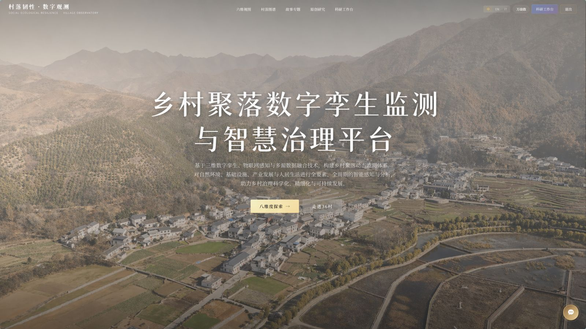

I am an architecture undergraduate at the XJTU-POLIMI Joint School, a joint programme of Xi'an Jiaotong University and Politecnico di Milano. I conduct research under the supervision of Prof. Binqing Zhai.
My research connects AI and geospatial methods with architecture and traditional settlements. I focus on digital heritage, digital twins and climate/disaster resilience, using UAV remote sensing, GIS, computer vision and interpretable machine learning.
UAV orthophoto, 3D mesh and point cloud fusion with YOLO instance segmentation, 3D GIS viewshed analysis and XGBoost–SHAP for 749 courtyards in 9 traditional villages (Shangluo), externally validated in Longnan.
From Resources to Action: Conditions Shaping Disaster-Adaptive Resilience in Traditional Villages—A Case Study of Baima Tibetan Villages in Wen County, Gansu (working English title)
Manuscript in preparation · target journal: International Journal of Disaster Risk Reduction
Projects
Digital Conservation of Sino-Italian Traditional Villages: Local Wisdom Study and Standardised Platform
National Undergraduate Innovation Training Programme (2025) Project Leader · 2025.06–2026.06 Supervisor: Prof. Binqing Zhai
Multi-source data capture, GIS, computer vision and machine learning to study disaster risk, building character and conservation of traditional villages, with a local-wisdom database and a digital-twin display platform.
UAV 3D Reconstruction and Multi-source Meteorological Coupling for Village Disaster Monitoring and Digital-Twin Simulation
Undergraduate Innovation Training Project Applied: 2026.03 · Planned: 2026.05–2027.05 Project Leader · Supervisor: Prof. Binqing Zhai
UAV photogrammetry / LiDAR, 3D Gaussian Splatting, AI recognition and Unreal Engine 5 disaster scenario simulation with MR/XR presentation.
Portfolio

Disaster Digital Twin Platform
Web platform built on UAV 3D reconstruction (point cloud / mesh / 3D Tiles) for village disaster monitoring and digital-twin display.
2025.06First Prize, Xuechuang Cup Beijing Digital Marketing Simulation Competition (undergraduate group).
2025Gold Award (national), China International College Students' Innovation Competition, International Track.
2025Bronze Award (national), China International College Students' Innovation Competition, International Track.
2025National Undergraduate Innovation Training Programme — ranked 1st in final defence.
2023First Prize, 35th XJTU "Tengfei Cup".
News
2026.09Co-first-author paper published in Remote Sensing: a UAV-based multi-source framework for courtyard-scale visual–material integrity assessment.
2025.09Paper on social–ecological system vulnerability published in Ecological Indicators.
2025.07Invited project presenter at WAIC 2025 (World Artificial Intelligence Conference), Shanghai: presented the village disaster-prevention digital twin project (UAV scanning, 3D reconstruction, UE5 simulation, XR).
2025.07Silver Award, "Youth Red Dream" track, XJTU round of the China International College Students' Innovation Competition.
2025.06Second Prize, 36th XJTU "Tengfei Cup"; First Prize, Xuechuang Cup Beijing Digital Marketing Simulation Competition.
2025Exhibited village digital twin, disaster simulation and XR work at the XJTU Campus Open Day.